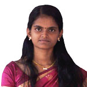
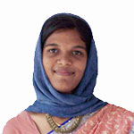
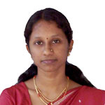
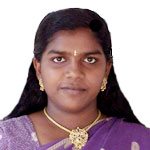

URL:
http://celos.ac.in/index.php?b2
Home
»
The Centre
»
People
»
Alumni
»
Int. MSc Batch 2
Adil Masood
Aneesh Krishnan
Anusree Kandoth Bansely Abdu
Binsagar S Deepa Kamath
Nitish Kumar Praveen Cheriyan
Renuka P Saurabh Raj
Siddharth Nambiar
Varun Gupta
Varun K. A. S.